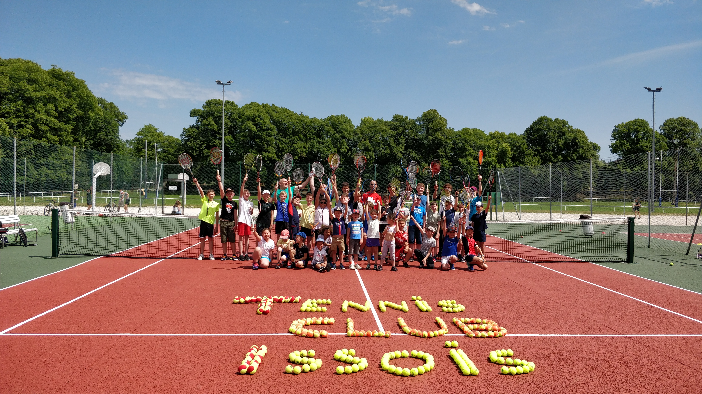

L'Open d'été
Les tableaux, les finales devant le club-house et la remise des prix qui clôt la saison.

Les tournois, l'école de tennis, les animations de l'année : ce que l'on ne voit pas dans un tableau de résultats.
Les albums
Six moments qui reviennent chaque année et font la vie du club.
Les tableaux, les finales devant le club-house et la remise des prix qui clôt la saison.
La journée portes ouvertes du club, ouverte à tous, licenciés comme curieux.
Les meilleures images du club sont prises par les adhérents et les parents. Si vous avez photographié un tournoi, une séance ou une animation, envoyez-les au club : elles rejoindront la galerie.
Merci d'indiquer la date et l'événement. Les fichiers volumineux peuvent être envoyés par un lien de partage.
Le club ne publie une photographie sur laquelle une personne est reconnaissable qu'avec son accord — et, pour un mineur, celui de ses représentants légaux. Cet accord est recueilli sur la fiche d'inscription, et il peut être retiré à tout moment.
Si une photo vous concerne et que vous souhaitez son retrait, écrivez à tennisclubissois@live.fr : elle sera retirée sans que vous ayez à vous justifier.
En savoir plus : Données personnelles.
Les tournois du club sont ouverts au public, et l'entrée est libre. Le club-house vous accueille pendant les épreuves.